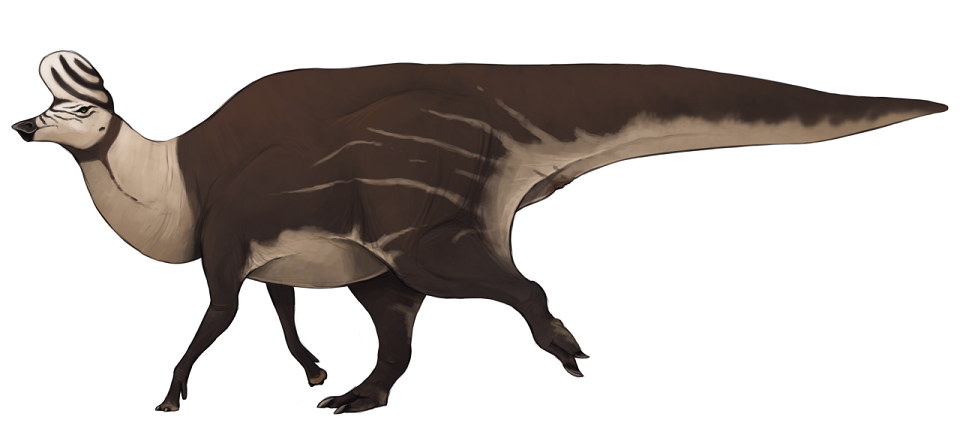
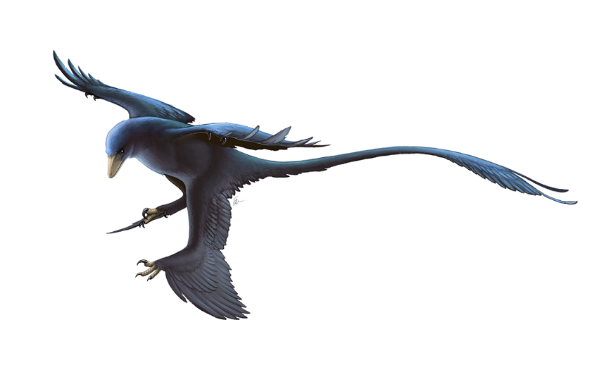

Unfortunately an image of giant lizards, and later, the aggressive titans of Hollywood attacking people, has ingrained the name Dinosaur into the public's brain for what it means literally. I'd personally like for people to see it in a better light, one that is much more realistic to how we view any other animal in today's world. So I'd like to show a handful of renditions on more "realistic" dinosaurs, if that is how you'd like to imagine it.
Allosaurus fragilis by Fred Wierum

Lambeosaurus magnicristatus by Jack Wood
Microraptor gui by Fred Wierum
